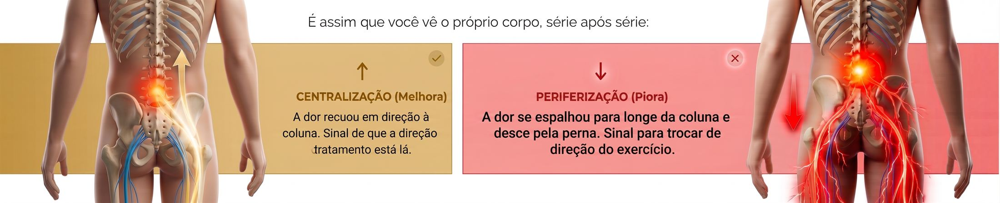
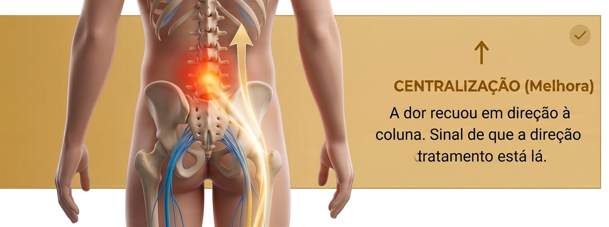
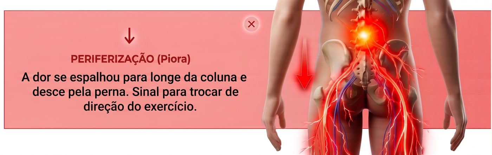

Por dentro do guia
Veja algumas páginas reais

Página 06

Página 13

Página 28
Duas pessoas com a mesma dor podem precisar de exercícios opostos. Descubra agora qual é o seu movimento certo e siga um plano de 30 dias para parar de recair.
30 páginas que levam você do "não sei o que fazer" até um plano diário, com fotos e dose exata de cada movimento.
Um protocolo guiado, dia a dia, para descobrir se o seu corpo responde melhor a movimentos de flexão ou de extensão: a decisão mais importante de todo o processo.
Trilha da flexão e trilha da extensão, com fotos reais de cada exercício, número de séries, repetições e frequência ao longo do dia.
Semana a semana, o que treinar, quando progredir de fase e como intercalar caminhada, sem precisar montar nada sozinho.
Uma página para anotar os 6 números que realmente mostram progresso, muito além do "hoje doeu menos".
Antes de te pedir qualquer coisa, quero te mostrar por que a sua dor sempre volta. Sem enrolação.
Criado por um fisioterapeuta que atende dor lombar e ciática todos os dias. Não é conteúdo copiado da internet.

É assim que você vai ler o próprio corpo, série após série:


A dor lombar aparece, ainda parece passageira.
Repouso ou remédio ajudam por uns dias. Parece resolvido.
Às vezes com o nervo ciático inflamado. "Já tentei de tudo" vira a frase do dia.
Em poucos dias, entende se o corpo responde melhor à flexão ou à extensão.
A dor começa a centralizar. Fase de Direção.
O tronco aprende a se sustentar sozinho. Fase de Estabilidade.
Levanta da cama sem se segurar. Fase de Força.
A dor lombar aparece, ainda parece passageira.
Repouso ou remédio ajudam por uns dias. Parece resolvido.
Às vezes com o nervo ciático inflamado. "Já tentei de tudo" vira a frase do dia.
Em poucos dias, entende se o corpo responde melhor à flexão ou à extensão.
A dor começa a centralizar. Fase de Direção.
O tronco aprende a se sustentar sozinho. Fase de Estabilidade.
Levanta da cama sem se segurar. Fase de Força.
Plano hora a hora para os momentos de crise aguda, para usar enquanto o método principal ainda está fazendo efeito.
Uma folha única para marcar seus treinos dia a dia e não perder o fio da progressão entre as fases.
Um arquivo separado, pronto para imprimir e colar na geladeira ou levar para o treino, sem precisar abrir o guia toda vez que for anotar seus números.
Se em até 7 dias você sentir que o Reset Lombar não é para você, basta enviar um e-mail e devolvemos 100% do valor, sem perguntas, sem burocracia.
Sim. O método não depende de quanto tempo a dor já dura, e sim de como o seu corpo responde ao movimento hoje. O teste de 3 dias funciona tanto para quadros recentes quanto para dores de longa data. O que muda é só o ritmo de progressão entre as fases.
Na maioria dos casos, sim: hérnia de disco costuma responder bem a movimento direcional bem dosado. O guia começa com uma checagem de segurança para identificar os sinais de alerta que pedem avaliação médica antes de qualquer exercício. Fora desses casos, o método se aplica normalmente.
Um guia digital em PDF de 30 páginas, com fotos de cada exercício, para ler no celular, tablet ou computador, e imprimir se preferir. Os bônus também são entregues em PDF.
O teste de 3 dias já mostra se você encontrou a sua direção. A partir daí, a maioria das pessoas sente alívio já na primeira fase (dias 1 a 10), mas o objetivo do método vai além do alívio rápido: as fases de Estabilidade e Força são o que evita a dor de voltar.
Assim que o pagamento é aprovado, você recebe acesso imediato na área de membros, com login por e-mail. O material fica disponível para consultar quando quiser, sem prazo de expiração.